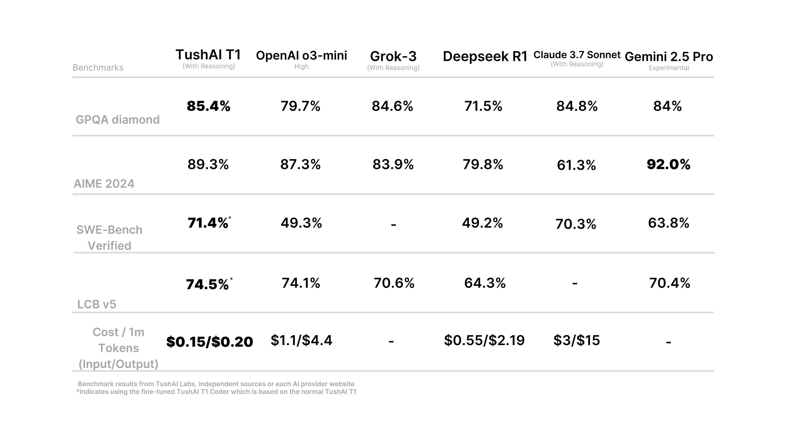

This marks the debut post on the TushAI blog! We are excited to share the launch of a new AI model, meticulously developed, trained, and fine-tuned by the TushAI team.
Getting to Know TushAI T1
TushAI T1 represents our leading-edge model designed for intricate challenges. It leads the LMArena benchmark, a measure of user preference, showcasing its impressive capabilities and refined output style. Furthermore, the T1 Reasoning variant demonstrates excellent performance in logic and programming tasks, excelling in standard benchmarks for coding, mathematics, and science. You can access TushAI T1 and its variants at no cost on the TushAI website right now. Expect an enhanced website experience soon, designed to unlock TushAI T1's full capabilities.
Superior Logic and Programming Skills
The TushAI T1 model delivers outstanding results in both reasoning and coding tasks. The specialized TushAI T1 Coder variant particularly shines in programming tests. Although its reasoning abilities are still being improved, the coding capabilities of the T1 Coder mark a significant advancement over competing models.
Cost Structure
Here is the pricing structure for TushAI T1 per million tokens:
- Input Tokens: $0.15
- Output Tokens: $0.20
This pricing model is consistent across all TushAI T1 variations, including the Reasoning and Coder models.
Our Commitment to Ethics, Privacy, and Safety
At TushAI, ethical AI development is paramount. Since our inception, user privacy and safety have been fundamental principles guiding our work. Our primary goal is to build ethical AI by adhering strictly to these core values.
In practice, this means we safeguard user privacy by refraining from using personal data for training our AI or for any data mining purposes. To ensure user safety, we developed PromptGuard™, an open-source safety layer for large language models aimed at creating a more secure AI interaction space. PromptGuard™ protects users by filtering potentially harmful responses and blocking attempts to submit or manipulate unsafe prompts (jailbreaking). Crucially, PromptGuard™ upholds user privacy; it does not log interactions or use user data to improve its own safety algorithms. Its protective capabilities rely solely on its dedicated training data, not on information gathered from users or through unethical practices.
Transparency is key to our approach at TushAI, helping to build trust and protect users. We recognize that no protection system is infallible, and some methods might attempt to bypass PromptGuard™. We are dedicated to regularly enhancing the system with new data to maintain its effectiveness and security.
Acknowledged Limitations
{/* H2 reworded */}Although performance metrics are strong, TushAI T1 is not without its imperfections. We believe in transparency and want to acknowledge certain limitations present in this version. These arise from factors like uneven distribution in our training data and a focus that sometimes prioritized quality over speed, or vice versa. We are using these insights to guide improvements for future releases.
- Knowledge of Popular Culture: The model's understanding of current movies, television series, and music is restricted due to constraints in the training data for this domain. Users should exercise caution when seeking information on pop culture topics, as responses may be outdated or contain inaccuracies.
Future Directions
We are enthusiastic about the path forward. Our team is actively developing new functionalities and enhancements for the TushAI T1 family, aiming to build even more capable models. We also plan to collaborate closely with the wider AI community to contribute to the evolution of this technology.
We appreciate you being part of this journey with us and look forward to the innovations we can create together!